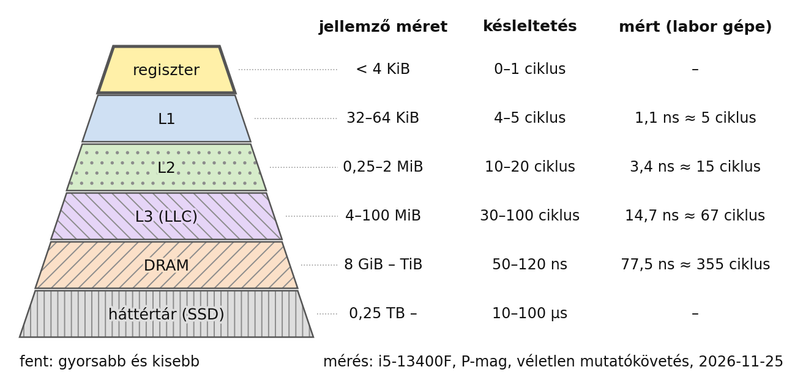
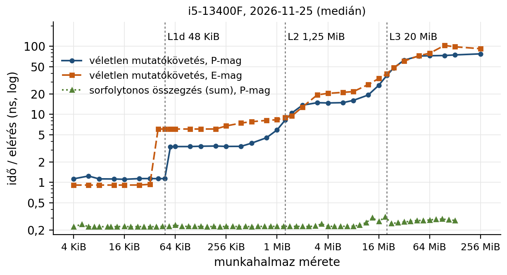

Egy ciklus egy 256 MiB-os tömb 4 bájtos egész számait adja össze. Ha
minden elemet olvas, egy elérés a labor gépén átlagosan 0,33 ns. Ha csak
minden 1024. elemet, azaz 4096 bájtonként egyet, akkor ugyanaz az
egyetlen összeadás és ugyanaz az egyetlen betöltés átlagosan 9,53 ns-ba
kerül: huszonkilencszer drágább (i5-13400F, P-mag, 2026-11-25). A
matmul kernel
-es
mátrixokon a ciklusok egyik sorrendjében 0,28 ns-ot, egy másikban 1,87
ns-ot költ egy belső iterációra, pedig mindkettő ugyanazt a
szorzás-összeadást végzi el.
Az utasítások száma itt nem magyaráz semmit: a különbség abból jön, hogy az adat honnan érkezik. Ez az alfejezet megtanítja, hogyan ítélje meg ezt egy kódról ránézésre, és hogyan mérje ki a saját gépén; a rész további eszközei (cache-szervezés, blokkosítás, prefetch) mind erre a problémára válaszolnak.
Aki asztalnál dolgozik, a kezében lévő papírt (regiszter) azonnal látja, az asztalon heverőért (L1) egy mozdulat kell, a pince (DRAM) hatalmas, de messze van. Jó, ha a gyakran kellő dolgok közel vannak, és ha egy útra nem egy lapot, hanem az egész dossziét hozzuk el.
A gép ezt automatikusan teszi. A processzor és a DRAM között gyorsítótárak (cache) tartják a nemrég használt adatok másolatait, és nem bájtonként, hanem 64 bájtos cache-sorokban hozzák be őket. Ez a memóriahierarchia: fentről lefelé nő a méret és a késleltetés, csökken a bájtonkénti ár.

Az ábra „jellemző” oszlopai processzoronként eltérő nagyságrendek [S-HP] [S-DREPPER] (ellenőrizendő: az adott típus gyártói adatai); a jobb oldali oszlop a saját mérésünk.
A processzorok sebessége sokáig sokkal gyorsabban nőtt, mint ahogy a DRAM késleltetése csökkent [S-HP]; a rést memóriafalnak (memory wall) hívják. A P-mag a mérés alatt kb. 4,58 GHz-en futott, tehát 77,5 ns körülbelül 355 órajelciklus. Ha a mag ciklusonként akár négy utasítást is befejezhet, egy ilyen várakozás alatt ezernél több utasítás helye vész el. Ez felső becslés (a mag a független munkát átfedi, ld. Regiszterátnevezés, ROB és spekuláció). A Végrehajtási idő, CPI és a vasegyenlet nyelvén: a memóriaelérés mintája nem az utasításszámot és nem az órajelet, hanem a CPI-t változtatja meg.
Definíció. Egy hozzáférési minta időbeli lokalitású (temporal locality), ha a nemrég használt címet hamarosan újra használja. Térbeli lokalitású (spatial locality), ha egy cím után hamarosan a közelében lévő címeket használja. Mindkettőt együtt lokalitásnak nevezzük.
Definíció. A cache-sor vagy blokk a cache és az alatta lévő szint közötti átvitel egysége, mérete bájt (a mai x86- és a legtöbb ARM-processzoron 64 bájt; ellenőrizendő a célgépen). A cím akkor találat (hit), ha a sorát a cache már tartalmazza, különben hiba (miss), és a sort be kell hozni a lentebbi szintről. A találati arány a találatok és az összes hozzáférés hányadosa, a hibaarány .
A térbeli lokalitást a cache-sor használja ki, az időbelit az, hogy a sor egy ideig bent marad (Csere- és írási stratégiák).
A futó kernelek lokalitása eltérő:
| Kernel | Térbeli lokalitás | Időbeli lokalitás | Munkahalmaz |
|---|---|---|---|
sum |
kiváló: sorban olvas | a tömbön egy menetben nincs; az összeg regiszterben marad |
bájt (int32) |
saxpy |
kiváló, két tömbön | y[i] olvasása és írása közvetlenül egymás után |
két tömb |
matmul |
a sorrendtől függ: soros vagy oszlopos | egy mátrixelemet -szer használ | elem |
chase |
véletlen láncnál nincs | csak ismételt bejárásnál | a teljes lista |
A munkahalmaz (working set) azoknak a bájtoknak az összessége, amelyeket a program egy adott szakaszban ismételten használ. Ha elfér egy szinten, a hozzáférések ott találnak; ha nem, a lentebbi szintig kell menni.
A C és a C++ a kétdimenziós tömböt sorfolytonosan
(row-major) tárolja: az int a[n][m] elemének címe
ahol
az elemméret bájtban. Szavakban: egy sor elemei egymás mellett vannak, a
következő sor
bájttal odébb kezdődik. Ha a belső ciklus
-n
fut, a lépésköz
bájt, és a program sorban halad a memóriában. Ha
-n
fut, a lépésköz
bájt:
és int32 esetén minden elérés 4096 bájttal odébb, másik
cache-sorban van.
Definíció. A lépésköz (stride) két egymást követő hozzáférés címének különbsége bájtban. A sorhasználat (line utilization) az érintett sorokból ténylegesen felhasznált bájtok aránya.
Ha a lépésköz , az elemméret és , akkor egy sorra átlagosan hozzáférés jut, és a sorhasználat . Ha , minden hozzáférés új sort érint, a sorhasználat , vagyis a behozott adat tizenhatod része hasznos.
Egy elérés ideje két részből áll: a ciklus saját munkája (összeadás, indexnövelés, elágazás) és a rá eső rész abból az időből, amelybe egy cache-sor behozása kerül. Ha egy sort elérés oszt meg, akkor
azaz kis lépésközöknél a sor árát sok elérés között osztjuk el, felett pedig minden elérés egy teljes sort fizet. A modellnek két ismeretlen paramétere van, tehát két mérési pontból meghatározható, a többi pont pedig ellenőrzés.
Az ábra alsó felén 64 bájtig a két görbe szinte fedi egymást, felette a mérés tovább nő: ott olyasmi történik, amit a modell nem tartalmaz.
Hogy a saját gép szintjei hol érnek véget, azt a munkahalmaz
méretének növelésével lehet kimérni. A bench_sum program
(A labor: archkit, mikrobenchmarkok és mérési
fegyelem) sorban összegez egy tömböt, a bench_chase
pedig egy véletlen sorrendben összefűzött láncot jár be: minden betöltés
címe az előző eredménye, ezért a processzor nem tudja előre elindítani a
következőt (a chase kernel részletei a Memóriavezérlő, sávszélesség és mérés
alfejezetben).

A kék görbe lépcsői ott vannak, ahol az operációs rendszer a cache-méreteket jelenti (48 KiB, 1,25 MiB, 20 MiB), az E-mag első lépcsője korábban jön (32 KiB-os L1). A zöld háromszögek viszont szinte vízszintesek: ennek oka a térbeli lokalitás (soronként 16 elem) és a hardveres előbetöltés (hardware prefetch), amely a sorban haladó mintát felismerve a következő sorokat a kérés előtt hozza (Nem blokkoló cache, memóriaszintű párhuzamosság és prefetch). A lépcsőt tehát csak olyan mérés mutatja, amely nem hagyja elrejteni a késleltetést; a jó lokalitású program viszont alig érzi a hierarchiát.
Továbbvitt eredmény. A lokalitás nyelvét (időbeli és térbeli lokalitás, cache-sor, találat, hiba, munkahalmaz) és a mért hierarchialépcsőket (a labor gépén a P-magon kb. 1,1 ns az L1, 3,4 ns az L2, 14,7 ns az L3 és 77,5 ns a DRAM véletlen eléréssel) a Cache-szervezés: leképezés és címbontás, az AMAT, a hibák osztályozása és a többszintű cache, a Cache-szimulátor és cache-tudatos programozás és a Memóriavezérlő, sávszélesség és mérés használja fel.
Továbbvitt eredmény. A lépésköz-hatás: egy elérés ára bájtig arányosan nő a lépésközzel (a sor árát egyre kevesebb elérés osztja meg), felette minden elérés új sort érint, és a mért idő a prefetch és a címfordítás miatt tovább romolhat. Erre épül a Cache-szimulátor és cache-tudatos programozás és a Nem blokkoló cache, memóriaszintű párhuzamosság és prefetch.
Legyen int a[64][64], azaz
B
KiB, a sorméret 64 bájt, és tegyük fel, hogy a tömb sorhatáron kezdődik.
A tömb
cache-sorból áll, egy mátrixsor (256 bájt) 4 sor, egy cache-sorban 16
szomszédos oszlop eleme van. A cache egyelőre bármelyik sort bárhová
teheti, és ha megtelik, a legrégebben használtat dobja ki.
1. Sorfolytonos bejárás (belső ciklus ). Az olvasása hiba, a sorral együtt is bejön, így a következő 15 olvasás találat. Soronként tehát 16 elérésre egy hiba jut: . Ez a cache méretétől függetlenül így van, ha legalább egy sor elfér.
2. Oszlopfolytonos bejárás (belső ciklus ), 1 KiB-os cache (16 sor). Az első oszlop 64 elérése 64 különböző sort érint. Mire a második oszlop elején visszatérnénk a 0. sor első cache-sorához, a cache már 63 másik sort látott, a 16 helyből régen kiszorult. Minden elérés hiba: , 4096 hiba.
3. Oszlopfolytonos bejárás, 8 KiB-os cache (128 sor). Az első oszlop 64 sora most elfér, és a második oszlop ugyanezt a 64 sort használja (a szomszédos elemek ugyanabban a sorban vannak). Egy 16 oszlopos csoport végéig minden sor bent van; a következő csoport új 64 sort hoz. Hibák száma: , ugyanannyi, mint sorfolytonosan.
Az oszlopfolytonos bejárás tehát csak akkor rossz, ha a belső ciklus munkahalmaza (itt 64 sor) nem fér a cache-be; ez adja majd a blokkosítás méretválasztását.
Először a kézi példát ellenőrizzük az archkit.cache
modellel. Itt egy teljesen asszociatív LRU-cache-t kérünk
(ways = a sorok száma); a modell felépítését a következő
alfejezet magyarázza.
import sys; sys.path.insert(0, "code")
from archkit import cache as C
N, E = 64, 4
row = [((i * N + j) * E, False, E) for i in range(N) for j in range(N)]
col = [((i * N + j) * E, False, E) for j in range(N) for i in range(N)]
for name, trace in (("sorfolytonos", row), ("oszlopfolytonos", col)):
for kib in (1, 8):
c = C.Cache(size=kib * 1024, block=64, ways=kib * 1024 // 64)
s = c.run(trace)
print(f"{name:16} {kib} KiB: {s.misses:5} hiba, m_r = {100 * s.miss_rate:.2f}%")sorfolytonos 1 KiB: 256 hiba, m_r = 6.25%
sorfolytonos 8 KiB: 256 hiba, m_r = 6.25%
oszlopfolytonos 1 KiB: 4096 hiba, m_r = 100.00%
oszlopfolytonos 8 KiB: 256 hiba, m_r = 6.25%A mérésnél a lépésközös bejárás magja a
code/bench/bench_sum.cpp függvénye (itt csak a sortörés
más):
__attribute__((noinline))
std::int64_t sum_stride(const std::int32_t* a, std::size_t n, std::size_t off,
std::size_t step) {
std::int64_t s = 0;
for (std::size_t i = off; i < n; i += step) s += a[i];
return s;
}A program 64 bájtnál nagyobb lépésköznél menetenként egy sorral elcsúsztatja a kezdőpontot, hogy a menetek ne mindig ugyanazokat a sorokat érintsék. Fordítás és futtatás (a kimenet CSV, jegyzőkönyvsorokkal):
make -C code/bench
code/bench/build/bench_sum --mode stride --cpu 2 --kib 262144 --reps 7A labor gépén lefuttatott mérés eredményét a
figures/data/ca044-lepeskoz.csv tárolja. Ebből illesztjük a
modellt a 4 és a 64 bájtos pontra, és megnézzük, mit jósol a
többire:
from archkit import perf
meta, rows = perf.read_bench_csv("figures/data/ca044-lepeskoz.csv")
t = {int(r["stride"]): float(r["median_ns_per_access"]) for r in rows}
t_sor = (t[64] - t[4]) * 16 / 15
t_munka = t[64] - t_sor
print(f"{meta['cpu']}, {meta['date'][:10]}")
print(f"t_munka = {t_munka:.3f} ns, t_sor = {t_sor:.3f} ns")
print(" s [B] sorhaszn. modell mért [ns/elérés]")
for s in (8, 16, 32, 128, 4096):
util = C.line_utilization(C.stride_trace(1024, s, size=4))
model = t_munka + t_sor * min(s / 64, 1)
print(f"{s:6} {100 * util:8.2f}% {model:6.2f} {t[s]:5.2f}")13th Gen Intel(R) Core(TM) i5-13400F, 2026-11-25
t_munka = 0.196 ns, t_sor = 2.143 ns
s [B] sorhaszn. modell mért [ns/elérés]
8 50.00% 0.46 0.44
16 25.00% 0.73 0.69
32 12.50% 1.27 1.25
128 6.25% 2.34 4.00
4096 6.25% 2.34 9.53A 8, 16 és 32 bájtos pontot a modell 0,04 ns-on belül eltalálja, pedig illesztéskor egyiket sem látta. A 128 és a 4096 bájtos pont viszont jóval drágább a jóslatnál, mert egy sor behozásának ára nem állandó: a hardveres előbetöltés a szomszédos sorokat tudja a legjobban előre hozni, 4096 bájtnál pedig minden elérés új memórialapra esik, és a címfordítás (TLB) is hibázik (TLB, nagy lapok és a VIPT cache). A 128 és 192 bájtos pont fordított sorrendjét (4,00 és 3,48 ns) ezekből az adatokból nem lehet megmagyarázni; géptulajdonságként jegyezzük fel.
A lépcsőgörbe adatait ugyanígy olvassuk be. A huge minta
ugyanaz a véletlen lánc, de nagy (2 MiB-os) memórialapokon:
_, ch = perf.read_bench_csv("figures/data/ca051-kesleltetes.csv")
lat = {(r["pattern"], int(r["bytes"])): float(r["median_ns_per_access"])
for r in ch if r["core"] == "P"}
print("munkahalmaz random huge seq [ns/elérés, P-mag]")
for kib in (16, 256, 1024, 4096, 262144):
b = kib * 1024
print(f"{kib:8} KiB {lat['random', b]:6.2f} {lat['huge', b]:5.2f} {lat['seq', b]:5.2f}")munkahalmaz random huge seq [ns/elérés, P-mag]
16 KiB 1.11 1.12 1.13
256 KiB 3.38 3.37 1.21
1024 KiB 5.90 3.38 1.28
4096 KiB 14.71 13.30 1.31
262144 KiB 77.52 69.56 3.10Az 1 MiB-os sorban a véletlen minta már 5,90 ns, a nagy lapos még
3,38 ns: a „korai” emelkedés nem az L2 vége, hanem a címfordítás ára. A
seq oszlop (sorban növekvő lánc) szerint az előbetöltés
függő betöltéseknél is sokat segít.
A cache-méreteket futtatás nélkül is le lehet kérdezni. A labor gépén:
lscpu -C
taskset -c 2 getconf LEVEL1_DCACHE_SIZE # P-mag
taskset -c 12 getconf LEVEL1_DCACHE_SIZE # E-magNAME ONE-SIZE ALL-SIZE WAYS TYPE LEVEL SETS PHY-LINE COHERENCY-SIZE
L1d 48K 416K 12 Data 1 64 1 64
L1i 32K 448K 8 Instruction 1 64 1 64
L2 1,3M 9,5M 10 Unified 2 2048 1 64
L3 20M 20M 10 Unified 3 32768 1 64
49152
32768A hibrid processzornak kétféle magja van, eltérő cache-ekkel, és a
getconf az éppen futtató mag adatát adja: rögzítés
(taskset) nélkül hol 49152, hol 32768 bájtot írhat ki.
Nyissa meg a lépésköz-lapot (HTML-kiadásban az ábra helyén).
bench_sum --mode stride
parancsot, és illessze a modellt a saját 4 és 64 bájtos pontjaira.getconf vagy egy könyvtár
által jelentett cache-méret futásról futásra változik.
Ok: hibrid processzoron a magtípusoknak eltérő
cache-eik vannak, a lekérdezés az aktuális magra vonatkozik.
Javítás: rögzítse a magot (taskset), vagy
olvassa ki mindkét magtípus adatait.matmul kernelből.int32 elemekkel?double mátrixban mekkora a lépésköz,
ha a belső ciklus a sorindexen fut?1. (A) Egy ciklus double (8 bájtos)
elemeket olvas 24 bájtos lépésközzel egy nagy tömbből. Mekkora a
sorhasználat? Hány hozzáférés jut átlagosan egy cache-sorra?
2. (A) Egy hisztogramszámoló ciklus:
for (i = 0; i < n; ++i) h[d[i]]++;, ahol d
bájtok tömbje, h 256 darab uint32. Jellemezze
a d és a h elérésének lokalitását.
3. (B) Egy double m[1000][1000] mátrix
minden elemét kell összeadni. A gép L1 cache-e 48 KiB, a sorméret 64
bájt. Becsülje meg a hibák számát sorfolytonos és oszlopfolytonos
bejárásnál, ha csak az L1-et vizsgálja, és a tömb sorhatáron
kezdődik.
4. (B) A mért adatokkal számolja ki, mennyi ideig tart egy 256 MiB-os tömb bejárása 8 és 64 bájtos lépésközzel. A tömb hányad részét olvassa a két ciklus, és hogyan viszonyul ehhez az idő?
5. (C, programozós) Írjon Python-kódot, amely a
figures/data/ca051-kesleltetes.csv P-magos
random és huge sorozatából megkeresi azt a
három szomszédos méretpárt, ahol az idő a legnagyobb arányban ugrik meg.
Mit talál, és mi a magyarázata az eltérésnek a két sorozat között?
A processzor és a DRAM sebessége között nagyságrendi rés van (memóriafal), ezt a regiszterek, az L1, L2 és L3 cache, a DRAM és a háttértár hierarchiája hidalja át. A hierarchia a lokalitásra épül: az időbeli lokalitás újrahasználatot, a térbeli lokalitás szomszédos címek használatát jelenti. Az átvitel egysége a 64 bájtos cache-sor; a hozzáférés találat vagy hiba. A lépésköz-hatás: 64 bájtig egy elérés ára a lépésközzel arányosan nő, , efelett a prefetch és a címfordítás miatt a mérés tovább romolhat. A labor gépén (i5-13400F, P-mag) a véletlen mutatókövetés lépcsői kb. 1,1, 3,4, 14,7 és 77,5 ns; a sorfolytonos összegzés alig mutat lépcsőt, mert a késleltetést a prefetch elrejti.
ikj sorrendben az A[i][k] elemet a teljes
belső ciklus használja). Térbeli: szomszédos címeket használunk (a belső
ciklus a B[k][j] és C[i][j] sorát balról
jobbra olvassa).1. Az elérések 24 bájtonként egy 8 bájtos elemet érintenek, a lépésköz kisebb a sornál, tehát a sorhasználat . Egy sorra átlagosan hozzáférés jut: három egymást követő sor ( bájt) nyolc elérést kap.
2. A d tömböt sorban, egyszer olvassuk:
kiváló térbeli lokalitás (64 elem soronként), időbeli nincs. A
h tömb 1 KiB, tehát legfeljebb 16–17 sor: a teljes tömb
elfér az L1-ben, és ugyanazokat a számlálókat sokszor növeljük, így erős
az időbeli lokalitás akkor is, ha a d értékei
véletlenszerűek (a térbeli lokalitás ekkor nem számít).
3. A mátrix bájt, azaz sor. Sorfolytonosan minden sorra 8 elem jut: hiba, . Oszlopfolytonosan egy oszlop 1000 különböző sort érint ( bájt), ami több, mint a 48 KiB (768 sor). Az előző oszlop sorai tehát kiszorulnak, mielőtt a szomszéd oszlop újra kérné őket: gyakorlatilag minden elérés hiba, hiba, nyolcszor annyi. (LRU-nál, ciklikus mintával ez pontosan 100%; ld. Csere- és írási stratégiák.)
4. 8 bájtos lépésközzel millió elérés ns ms. 64 bájttal millió elérés ns ms. A második ciklus a tömb elemeinek nyolcadát olvassa a 8 bájtoshoz képest, ideje mégis annak kétharmada, mert ugyanannyi cache-sort hoz be. A memóriaforgalom, nem az elemek száma határozza meg az időt.
5. Az arány a szomszédos méretpontok időhányadosa:
for pat in ("random", "huge"):
pts = sorted((b, v) for (p, b), v in lat.items() if p == pat)
jumps = sorted(((v2 / v1, b1, b2) for (b1, v1), (b2, v2) in zip(pts, pts[1:])),
reverse=True)[:3]
for ratio, b1, b2 in jumps:
print(f"{pat:6} {b1 // 1024:6} -> {b2 // 1024:6} KiB: {ratio:.2f}x")random 48 -> 56 KiB: 2.95x
random 1024 -> 1280 KiB: 1.40x
random 16384 -> 20480 KiB: 1.40x
huge 48 -> 56 KiB: 2.94x
huge 1280 -> 1536 KiB: 2.61x
huge 16384 -> 20480 KiB: 1.86xA legnagyobb ugrás mindkét sorozatban 48 KiB-nál van (L1 vége). Nagy lapokkal az L2 vége (1,25 MiB) éles, 2,6-szoros ugrás; 4 KiB-os lapokkal elmosódik, mert a címfordítás ára már 512 KiB felett emeli a görbét. Az L3 vége (20 MiB) mindkettőben lapos: a szintet más folyamatok is használják.